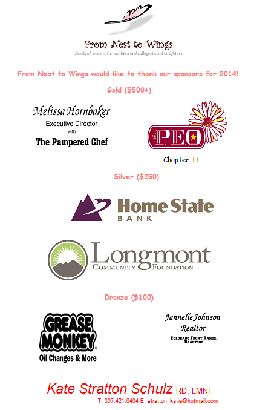

Longmont Nest to Wings is committed to leading a profound transformation in the country. Our commitment is to stand firm in our values to build a better world. If you wish to help contribute to our cause we offer a variety of means to enlist your aid. Look below for more information, and know we appreciate any contribution you wish to make to the cause.
Donation
Longmont Nest to Wings obtains financial support from national and global funds for the development of our operations and projects. We are also pleased to count among our allies, organizations and individuals who are willing to make donations to further our cause. Donations can be made either publicly or anonymously, and are a vital component that allow us to broaden the scope of coverage for our activities. Thank you for your donation to Longmont Nest to Wings. With it you are helping to increase the impact of the actions of our organization. As a government recognized charitable organization your contribution may be considered as tax deductible.
Volunteering
Thank you for your interest in volunteering with Longmont Nest to Wings. We hope you can find here a fulfilling and dynamic learning experience.Our volunteer program has a well established structure, which helps each volunteer to develop different skills and very familiar with their own personal and professional development, by supporting actions that he or she performs.The program welcomes people of all ages, sexes, vocational and educational levels, who wish to be linked to the social impact actions we take, as part of the core activities of the organization. We seek people with a sense of social responsibility, warm and responsible, who want to make their contribution to the world. Contact Us to learn what volunteer opportunities are available.
